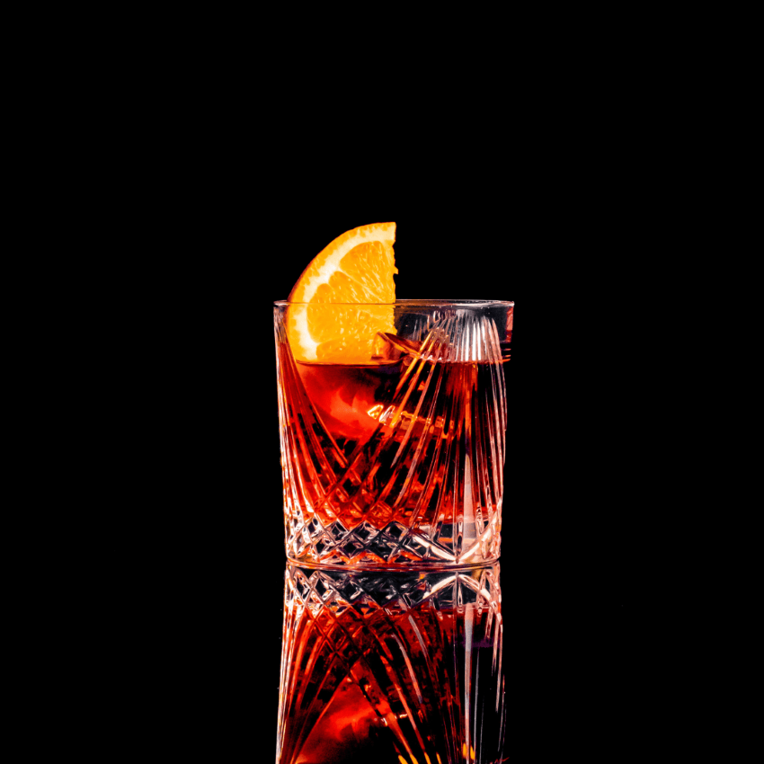

Ingredientes
- 30 ml de gin
- 30 ml de vermute doce (vermouth rosso)
- 30 ml de Campari
- Gelo
- Casca de laranja (para decorar)
Instruções:
- Em um copo baixo (old fashioned ou rocks), adicione o gin, o vermute doce e o Campari.
- Encha o copo com gelo.
- Mexa bem por cerca de 10 segundos para combinar os ingredientes e resfriar a bebida.
- Decore com uma casca de laranja (ou uma fatia, se preferir).